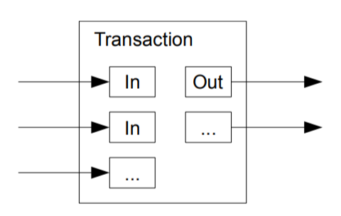
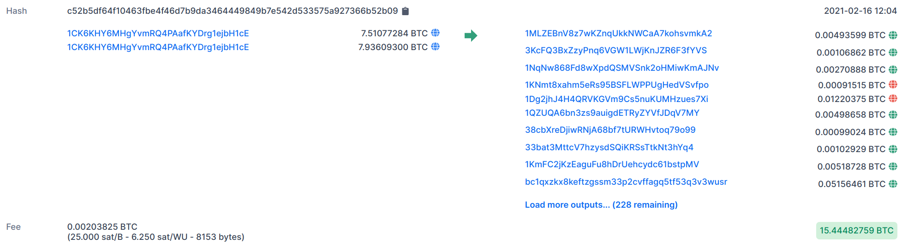
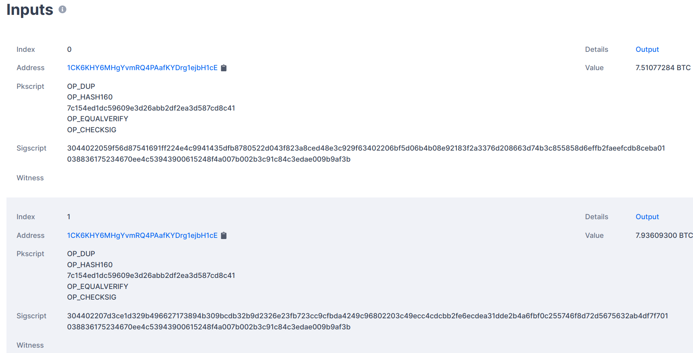

Visualization of a transaction. Image by Satoshi Nakamoto (Bitcoin: A Peer-to-Peer Electronic Cash System)Bitcoin is based on the UTXO (unspent transaction output) model to ensure that nobody is able to spend money they don’t have and prevent money from being spent twice — so-called double-spending. In this article, you will learn how that works. Let’s go!
The Context
Bitcoin transactions are stored in blocks. Verifying the transactions is a crucial part of the security of Bitcoin. Another element of security is to make it computationally hard to add new blocks by adding a mathematical puzzle. In this article, you will learn how the transactions are actually validated.
If you want a longer introduction to Bitcoin / Blockchain, I’ve got you: The Blockchain An Introduction to Blockchain, Bitcoin ₿, and related concepts
How Bitcoins are created
The first block of the blockchain is just defined in the code. All other blocks in Bitcoin need to have a “proof of work”. This is a solution to an automatically generated mathematical puzzle that makes clever use of hash functions. Solving this hash puzzle is computationally intensive. This means you need to have good hardware and invest a lot of time and electricity to solve it. People wouldn’t do that just for fun on the current scale. They do it because of the mining reward. This reward is given to every solved hash puzzle.
Halving
When Bitcoin started in 2009, the mining reward was 50 Bitcoin (BTC). In 2012, the reward was halved to 25 Bitcoin. In 2016 the mining reward was halved to 12.5 BTC. The last halving was in 2020 to 6.25 BTC.
Halving happens every 210,000 blocks. It is a mechanism to keep the total supply of bitcoins in check. The maximum possible amount of Bitcoins is 21 million. Then, miners will not receive a reward anymore. They will need to use transaction fees then — which they already do.
Keys and Addresses
Bitcoin makes use of ECDSA. Blair Marshall has written a nice article about it: How does ECDSA work in Bitcoin ECDSA (‘Elliptical Curve Digital Signature Algorithm’) is the cryptography behind private and public keys used in…medium.com
The gist of it is that people have a private and a public key. The public key can be known to everybody, but the private key must be kept private. The owner of the private key can approve a transaction by a digital signature. This signature is an algorithm that makes use of the private key in a similar way to a signature: It is easy to tell that the owner has created it and (in contrast to real signatures) it is practically impossible to forge the signature.
The Bitcoin address is generated from the public key by applying the SHA256 and RIPEMD-160 hash functions (source).
The reason for not using the public key directly is to have a second layer of defense (security in-depth). Even if the ECDSA algorithm would get broken (or, more likely, an implementation flaw would be found) the attacker would still need to figure out how to undo the hashing. It is highly unlikely that both happen around the same time.
The Anatomy of a Transaction
You can go to the block explorer and actually have a look at any block. Taking the linked example, you might see many lines like this:

Screenshot taken from blockchain.comIn this example, you see two input addresses and over 228 output addresses. When you scroll down a bit, you can see the inputs:

Screenshot taken from blockchain.comHere you can see the ECDSA signature of input 1:
3044022059f56d87541691ff224e4c9941435dfb8780522d043f823a8ced...a01
And the public key of input 1:
038836175234670ee4c53943900615248f4a007b002b3c91c84c3edae009b9af3b
The same goes for input 2.
Inputs and Outputs
It sounds crazy but imagine real coins. In a transaction with real coins, the receiver(s) get as many coins as the sender(s) put into the transaction. No coin is lost. Coins are created during mining in a controlled way and in a limited amount. After that, they are assigned to a Bitcoin address.
This is the core of the UTXO model. You have a bunch of input Bitcoin addresses and a bunch of output Bitcoin addresses.
Visualization of a transaction. Image by Satoshi Nakamoto (Bitcoin: A Peer-to-Peer Electronic Cash System)
Everybody can verify which address has how many Bitcoins in it by getting the whole blockchain. It is possible to track every bitcoin since the beginning.